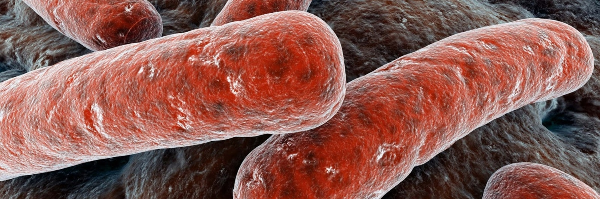

Alergía
⌊Alergia⌉
Las alergias, también llamadas reacciones de hipersensibilidad, son respuestas exageradas del sistema inmunológico (las defensas de nuestro organismo) al entrar en contacto con determinadas sustancias, llamadas alergenos. Su aparición se recrudece en primavera, porque uno de los grupos de alergenos más frecuentes son los pólenes, unas células reproductoras de las plantas que proliferan durante esta estación.
•Causas
Se estima que un 20 por ciento de la población es alérgica a alguna sustancia (pólenes, polvo, alimentos, hongos) y parece ser una cifra que va en aumento. Los especialistas estiman que en los próximos 20 años, las alergias podrían formar parte de la vida de la mitad de los europeos y del 30 por ciento de la población española.
En parte, el aumento podría deberse a que en los países industrializados los niños no tienen contacto directo con múltiples microorganismos (virus y bacterias). Esta protección podría hacer que su sistema inmune no se estimule lo suficiente y crezcan más vulnerables ante los agentes externos.
No obstante, se sospecha que existe una predisposición hereditaria a las alergias, lo que significa que un niño cuyos padres son alérgicos probablemente desarrolle algún tipo de sensibilización, aunque no necesariamente hacia la misma sustancia que rechazan sus padres. Por ejemplo, si la madre es alérgica al marisco, tiene más probabilidades de desarrollar una alergia, pero no precisamente a ese alimento, sino a otros alergenos como el polen. También puede favorecer la aparición de las alergias situaciones en las que bajan o se debilitan las defensas del organismo (tras una infección vírica o durante el embarazo).
•Síntomas
A pesar de que son muy molestas, por lo general, las alergias no son complicaciones graves, pero sí pueden acabar en cuadros más complejos, como el asma. De hecho, se calcula que el 80 por ciento de los asmáticos tienen, en menor o mayor grado, una base alérgica. En estos casos, el asma aparece también por la acción de los alergenos y los pólenes son el principal grupo que la desencadena.
Las reacciones alérgicas pueden ser leves o graves. La mayoría de ellas consiste sólo en la molestia que causa el lagrimeo y el picor en los ojos, además de algunos estornudos. En el extremo opuesto, las reacciones alérgicas pueden poner en peligro la vida si causan una repentina dificultad respiratoria, un mal funcionamiento del corazón y un acusado descenso de la presión arterial, que puede acabar en shock. Este tipo de reacción, llamada anafilaxia, puede afectar a las personas sensibles en distintas situaciones, como poco después de comer ciertos alimentos, tras la toma de determinados medicamentos o por la picadura de una abeja.
•Tratamiento
También conocida como "desensibilización" o "vacunas para la alergia" puede cambiar gradualmente la manera en la que el organismo reacciona a las sustancias que le producen alergia para que no experimente más sus síntomas. La mayoría de las personas que se siguen vacunando experimentan una mejora significativa, esta mejora no se observa hasta unos meses después de haber comenzado la vacunación, y no suele ser clara hasta que transcurra el año de tratamiento.
La inmunoterapia se reserva normalmente para las personas que no obtienen mejoras con los fármacos o que necesitan una combinación de medicamentos que es cara, que tienen síntomas de la alergia durante muchos meses cada año, y que no pueden evitar los factores desencadenantes (llamados alergenos) que les producen los síntomas. Este tipo de vacunas tratan las alergias producidas por las picaduras de insectos, polen, moldes, ácaros del polvo, cucarachas o al pelo de animales como los perros o los gatos.
⌊Alergia al Polen⌉
Los pólenes son granos minúsculos que contienen células espermáticas. Son producidos por el aparato reproductor masculino de las flores y transportan las células espermáticas al aparato reproductor femenino para fecundarlas. Una sola planta puede producir miles de granos de polen, que se ve como polvo amarillo en las flores pero que no puede verse cuando está disperso en el aire. El polen debe distinguirse de las semillas con pelosidades (pelusillas blancas) que producen los chopos y otras plantas en primavera. Algunos pacientes culpan a estas pelusillas de la alergia cuando en realidad ésta la produce el polen disperso en la atmósfera.
•Tipos
-Gramíneas-
Las gramíneas (poaceae o gramineae) son la primera causa de alergia en nuestro país y se distribuyen por el centro y norte de España. Aunque incluye varios miles de especies, es la subfamilia Pooideae la que contiene la mayoría de los géneros importantes que producen polinosis (Phleum, Dactylis, Lolium, Trisetum, etc.). Se trata de malas hierbas que crecen en los bordes de las carreteras, campos de cultivo o descampados. Las concentraciones atmosféricas de gramíneas varían de un año a otro. En Castilla León, Castilla La Mancha, Extremadura y el interior de Levante y Andalucía la concentración que se produce desde abril a julio está relacionada con la pluviosidad preestacional, es decir, con la registrada entre octubre y marzo. Su periodo de polinización es muy amplio ya que la floración de cada una de sus especies se da en un momento determinado. Aunque en la denominada España verde (macizo galaico y cornisa cantábrica) hay una alta concentración de gramíneas, la polinización es moderada ya que llueve mucho en los meses de floración.
-Oleas-
La familia de las oleaceae incluye numerosos árboles y arbustos aunque sólo tres influyen de una manera significativa en la carga atmosférica: el Fraxinus (febrero-marzo), la Olea (abril-junio) y el Ligustrum (julio). El Olivo es el más frecuente y alergénico y abunda en la zona mediterránea, por lo que también afecta a otros países como Italia, Israel, Grecia, Turquía y Portugal. Tras las gramíneas, el olivo es la segunda causa de alergia en España. Jaén es la provincia más afectada, puesto que el 62 por ciento de su extensión está dedicada a la extensión y el 95 por ciento de los alérgicos está sensibilizado al olivo. Otras zonas afectadas son Córdoba, Sevilla, Málaga, Granada, Cuidad Real y Toledo.
-Parietaria (Urticaceae)-
La parietaria es una familia de malezas muy alergénica y es una de las principales fuentes de polen alergénico en las regiones costeras mediterráneas. La especia más importante es la Parietaria judaica que se encuentra en solares y paredes de estas áreas. El periodo de polinización se extiende de febrero a noviembre dando una sintomatología multiestacional y perenne que , en ocasiones, puede ser confundida con rinitis o asma crónicos. Este hecho se ve favorecido por la aparición tardía de este tipo de polinosis en pacientes que superan los 30 años de edad. Las provincias más afectadas son Barcelona, Murcia y Valencia con una prevalencia que oscila entre el 25 y el 50 por ciento de los pacientes con polinosis. Su presencia también es importante en el norte de España, especialmente en La Coruña, donde afecta al 28 por ciento de la población, y en Bilbao, cuya incidencia alcanza el 4 por ciento.
⌊Alergias alimentarias⌉
Una alergia alimentaria es una respuesta exagerada del sistema inmunológico por el consumo de un alimento en particular. Hay que diferenciarlo de la intolerancia alimentaria, que no es una reacción alérgica, pero constituye un efecto indeseable producido por la ingestión de un alimento determinado. Los alimentos que con más frecuencia producen alergia son la leche, los huevos, el marisco, las nueces, el trigo, los cacahuetes (maní), la soja y el chocolate.
•Causas
La respuesta inmunitaria del cuerpo lo protege contra sustancias potencialmente nocivas, como bacterias, virus y toxinas. Sin embargo, en algunas personas esta respuesta inmunitaria se desencadena por la ingesta de un alimento determinado. Cuando esto ocurre, el sistema inmunológico libera sustancias que causan síntomas de alergia alimentaria.
•Diagnóstico
Las pruebas cutáneas en algunos casos permiten diagnosticar una alergia alimentaria; un resultado positivo no necesariamente significa que una persona sea alérgica a un alimento en particular, pero un resultado negativo señala que es improbable que sea sensible a dicho alimento. Después de un resultado positivo en una prueba cutánea, el alergólogo puede necesitar realizar una prueba oral para llegar al diagnóstico definitivo.
•Tratamiento
El único tratamiento comprobado para la alergia alimentaria es evitar el alimento. No se ha demostrado claramente que otros tratamientos, entre ellos vacunas antialérgicas y probióticos, ayuden con las alergias alimentarias.
⌊Fiebre de Heno⌉
Durante la primavera, el verano y el otoño el polen flota en el aire. Mediante la respiración, el polen penetra en las fosas nasales, provocando que las personas alérgicas fabriquen unos productos químicos denominados histaminas. Éstas causan estornudos, rinorrea, ojos enrojecidos y acuosos, picor, congestión o fiebre del heno. Esta última enfermedad, también denominada como rinitis alérgica estacional o polinosis, es una rinoconjuntivitis debida a la alergia al polen. Entre los síntomas más frecuentes se encuentran los estornudos, sobre todo por las mañanas; prurito (picor) naso-ocular; goteo postnasal -que puede desencadenar tos seca- y obstrucción nasal, que si es severa puede producir cefaleas. Asimismo, también se pueden presentar cuadros de lagrimeo y fotofobia.
•Otros Datos
Generalmente, basta con informar al médico de cabecera sobre los síntomas que padece para que con un examen médico de la nariz, los oídos, la garganta y los pulmones le diagnostique la enfermedad. Asimismo, el tratamiento se basa en pastillas antihistamínicas, líquidos pulverizables para la nariz o gotas para los ojos. Sin embargo, si los síntomas no se pueden mantener bajo control con estas medidas, quizá sea necesario acudir a un especialista en alergias. El riesgo de desarrollar la fiebre del heno se debe a factores hereditarios y a la exposición a pólenes alergénicos. Esta enfermedad se suele desarrollar durante la infancia y la juventud. Sin embargo, no es extraño que se produzcan a otras edades debido al exceso de polución y polen en el ambiente.
⌊Rinitis⌉
La rinitis es un trastorno que afecta a la mucosa nasal y que produce estornudos, picor, obstrucción, secreciones nasales y en ocasiones falta de olfato. La rinitis o rinoconjuntivitis no es igual a asma, pero puede ser un indicador de que la persona que la padece tiene una especial predisposición a desarrollar más adelante los síntomas (tos seca, sensación de falta de aire, sibilancias, etc.) característicos de una hiperreactividad bronquial. Además, la presencia reiterada de rinitis debe ser motivo de consulta a especialistas para su estudio y eventual establecimiento de medidas de tipo preventivo que eviten la aparición de asma o sirvan para el tratamiento precoz de la misma.
•Causas
En estos casos, la inflamación de la mucosa nasal y su cortejo de síntomas son casi continuos a lo largo de todo el año. A veces se conoce la causa y en otras no. En el primer caso, esto es, en las rinitis perennes de causa conocida, el factor provocador son los alergenos (sustancias con la propiedad de motivar alergia en ciertas personas), mientras que en las de causa desconocida (o intrínseca) la razón habría que buscarla en la especial sensibilización del organismo de los afectados.
•Síntomas
El médico debe diferenciar la rinitis alérgica perenne de las infecciones recurrentes de senos (sinusitis) y de las formaciones anormales que afectan la nariz (pólipos nasales). La sinusitis y los pólipos nasales pueden ser complicaciones de la rinitis alérgica.
•Diagnóstico
Para llevar a cabo un diagnóstico correcto de la rinitis alérgica se llevan a cabo diferentes pruebas de laboratorio:
Test cutáneos de alergia(prueba de hipersensibilidad inmediata): un método in vivo para determinar la hipersensibilidad inmediata (mediada por IgE) a alergenos específicos.
Prueba de radioalergoadsorción (RAST): mide indirectamente la cantidad de inmunoglobulina E (IgE), que sirve como un anticuerpo para un antígeno particular.
Cáncer
⌊Cáncer de Ovarios⌉
Las mujeres tienen dos ovarios que se encuentran en la pelvis y que se comunican con el resto del aparato reproductor femenino por las trompas. Su función principal es la reproducción y, supeditada a ésta, la producción de hormonas femeninas. Los ovarios tienen un recubrimiento formado por células epiteliales. De la transformación maligna de estas células surgen la inmensa mayoría de los cánceres de ovario.
•Causas
Actualmente, se desconoce cómo y porqué aparece el cáncer de ovario. Sin embargo, se conocen diversos factores hormonales y reproductivos que pueden favorecer su aparición como la infertilidad o un número pequeño de embarazos. Los factores genéticos son determinantes tan sólo en un 10-15% de los casos. En estos casos se asocian el cáncer de mama y el de ovario en una misma familia o, incluso, en una misma persona. Se sospecha que algunos factores ambientales como la grasa de la dieta, la utilización de polvos de talco o algunas infecciones por virus, pueden tener alguna importancia en la aparición de esta enfermedad. Se estima que el 1.5% de las mujeres son diagnosticadas de esta enfermedad a lo largo de toda su vida. Aunque el cáncer de ovario se puede presentar en la juventud, la inmensa mayoría de los casos ocurren después de la menopausia.
•Síntomas
Es una enfermedad que suele producir pocos síntomas, pudiendo alcanzar tamaños muy grandes antes de causarlos. El primer síntoma puede ser un ligero malestar en la parte inferior del abdomen, similar a una indigestión; la hemorragia uterina no es frecuente. El hecho de que una paciente posmenopáusica tenga ovarios de mayor tamaño puede ser un signo precoz de cáncer, a pesar de que su crecimiento también puede deberse a quistes, a masas no cancerosas y a otros trastornos. Así mismo, puede aparecer líquido en el abdomen y éste puede hincharse, debido a ello o al aumento de tamaño del ovario. En esta fase, la mujer puede tener dolor en la pelvis, anemia y pérdida de peso. En algún caso excepcional, el cáncer de ovario secreta hormonas que producen un crecimiento excesivo del revestimiento interno uterino, un aumento en el tamaño de las mamas o un mayor desarrollo del vello.
⌊Cáncer de Colon⌉

El cáncer de colon es una enfermedad en la que las células malignas se localizan en la porción intermedia y más larga del intestino grueso. Es un tipo de cáncer bastante común en muchos países, pero también resulta fácil de detectar, tiene un alto grado de curación y tarda mucho en desarrollarse. El colon, junto con el recto (porción final del intestino grueso), es el lugar donde se almacenan las heces antes de ser expulsadas al exterior a través del ano. Al encargarse de esta labor, acumula sustancias de desecho, por lo que es un lugar propicio para la aparición de un cáncer. Por eso es importante reducir el tiempo de acumulación al mínimo, adoptando una dieta equilibrada que facilite el tránsito intestinal al máximo.
•Causas
Edad. La mayor parte de los casos de cáncer de colon se presenta en pacientes mayores de 50 años.
Dieta. El cáncer de colon parece estar asociado a dietas ricas en grasas y pobres en fibra. En este sentido, actualmente se están llevando a cabo numerosas investigaciones.
Herencia. En el cáncer de colon desempeña un importante papel la herencia familiar, ya que existe la posibilidad de que se transmita hereditariamente y predisponga a la persona a sufrir la enfermedad. Sin embargo, esto puede detectarse y el cáncer tratarse de manera precoz.
Historial médico. Se ha demostrado que quienes tienen una mayor predisposición a padecer esta enfermedad son las personas que tienen o han tenido: pólipos (crecimiento benigno) de colon o recto; Colitis ulcerosa (inflamación o ulceración del colon); Cáncer como mama, útero u ovario.
Estilo de vida. Existen ciertos factores que dependen del estilo de vida y que predisponen a la aparición del cáncer de colon, como, por ejemplo, la obesidad, la vida sedentaria y el tabaquismo.
•Síntomas
El cáncer de colon tiene una larga evolución. Empieza con la formación de un pólipo (bulto que se forma junto a alguna membrana corporal) de carácter benigno. Las molestias más frecuentes aparecen en la fase avanzada de la enfermedad.
⌊Cáncer de cuello de Útero⌉
El cérvix es la parte inferior del útero o matriz y se conoce comúnmente como cuello de la matriz. El cérvix tiene un papel muy importante en el mantenimiento de un embarazo normal. El cáncer de cérvix constituye el 6 por ciento de los tumores malignos en mujeres, el segundo más frecuente entre todas las mujeres y el más frecuente entre las mujeres más jóvenes. En general afecta a mujeres entre 35 y 55 años. Este tipo de cáncer puede estar ocasionado por un virus (el papilomavirus humano) que se contagia a través de las relaciones sexuales.
•Causas
Existen algunos factores que se han relacionado con la incidencia del cáncer de cérvix. El factor de riesgo más importante en el desarrollo de lesiones premalignas (CIN) o cáncer de cérvix es la infección por papilomavirus, especialmente los tipos 16 y 18.
Por ello, se recomienda habitualmente la realización del test de Papanicolaou cuando la mujer comienza a mantener relaciones sexuales, de manera anual en mujeres de alto riesgo y en mujeres de bajo riesgo, después de 2-3 revisiones normales, se pueden realizar cada 3 años.
•Síntomas
Los programas de detección precoz permiten diagnosticarlo en mujeres asintomáticas. Habitualmente el primer síntoma de cáncer de cérvix es el sangrado postcoital o entre dos menstruaciones. También puede ir acompañado de un aumento en las secreciones vaginales, que se hacen malolientes.
⌊Cáncer de mama⌉
Las mamas o senos se componen de grasa, tejido conectivo y glandular. En este tejido se encuentran las glándulas productoras de leche de las que nacen unos 15 ó 20 conductos mamario, para transportar la leche hasta el pezón, rodeado por la areola. Estos lobulillos y conductos se encuentran en el estroma, un tejido adiposo, en el que también están los vasos sanguíneos y linfáticos. Los tejidos mamarios están conectados, además, con un grupo de ganglios linfáticos, localizados en la axila. Estos ganglios son claves para el diagnóstico del cáncer de mama, puesto que las células cancerosas se extienden a otras zonas del organismo a través del sistema linfático. Cuando se habla de ganglio centinela se alude, precisamente, al ganglio más cercano al lugar donde se localiza el cáncer.
•Síntomas
Diversas investigaciones han encontrado un grupo de factores de riesgo, o circunstancias, que hacen a una persona más propensa para desarrollar el tumor.
Edad: el riesgo aumenta con la edad. La mayoría de cánceres de mama se produce sobre los 50 años; a los 60 el riesgo es más elevado y resulta muy poco frecuente por debajo de los 35 años, aunque también es posible.
Sexo : las mujeres son las más propensas a desarrollar cáncer de mama. Los hombres también pueden sufrirlo, pero la probabilidad es de uno por cada cien mujeres.
Antecedentes familiares : las posibilidades aumentan si una hermana, madre o hija ha sufrido esta enfermedad. Además este riesgo se eleva si el familiar que ha padecido cáncer lo ha hecho antes de la menopausia, o si ha afectado a los dos senos.
Haber sufrido otro cáncer : el riesgo de cáncer de mama aumenta si se ha sufrido previamente otro cáncer, especialmente de ovario o de colon, o un carcinoma lobular o ductal in situ (dos tipos de tumor maligno que aparecen en los lóbulos o en los conductos galactóforos de los senos, o conductos mamarios). Otro posible factor de riesgo es una hiperplasia benigna, una especie de tumor no maligno, que altera el tejido del seno.
⌊Cáncer de piel⌉
El cáncer de piel no melanoma es el tipo más común de cáncer de piel. Se le llama no melanoma, porque este grupo de tumores cancerosos comprende todos los tipos de cáncer de la piel, excepto uno: el melanoma maligno, que es el cáncer que se desarrolla a partir de los melanocitos.
•Causas
La exposición excesiva a la radiación ultravioleta (UV), cuya principal fuente es la luz solar. El grado de exposición a esta radiación depende de la intensidad de la luz, del tiempo de exposición, y de si la piel ha estado protegida. Las personas que viven en áreas donde están expuestas todo el año a una luz solar intensa tienen mayor riesgo. Estar largo tiempo a la intemperie por motivos de trabajo o diversión sin protegerse con ropas adecuadas y protección solar aumenta el riesgo.
•Causas
Como parte de un examen de rutina relacionado con el cáncer, el médico examinará minuciosamente la piel del paciente. Pero es igualmente importante que el paciente se revise a sí mismo la piel, preferiblemente una vez al mes. Para ello, deberá conocer el aspecto de los lunares, las imperfecciones, las pecas y otras marcas que tenga en la piel para poder detectar cualquier cambio.
Se recomienda hacerse el autoexamen frente a un espejo de cuerpo entero. Para las áreas difíciles de ver puede usarse un espejo de mano. Deben examinarse todas las áreas, incluyendo las palmas de las manos y las plantas de los pies, la región lumbar y la parte posterior de las piernas./p>
Dermatológicas
⌊Acné⌉
El acné es una enfermedad que se caracteriza por la aparición de lesiones en la piel como consecuencia de una foliculitis, una inflamación y posterior infección del poro folicular (orificio de salida del pelo). Este trastorno puede llegar a tener implicaciones psicológicas y sociales, especialmente entre las personas que trabajan de cara al público que, en ocasiones, tienen problemas en su entorno laboral porque no alcanzan el grado de presencia física exigido. Esto hace que aumente el grado de tensión emocional y, en consecuencia, empeore el acné.
•Causas
Se presenta típicamente en la adolescencia, afectando a un 80% de este grupo poblacional. debido a una interacción entre hormonas, sebo y bacterias que viven sobre la piel o dentro de ella y también en el cabello. Durante la pubertad, aumenta la actividad de las glándulas sebáceas de la piel con producción excesiva de sebo. A menudo, el sebo seco, la piel descamada y las bacterias se acumulan en los poros de la piel formando un comedón, que impide que el sebo fluya desde los folículos pilosos atravesando los poros. Si el bloqueo es incompleto se forman puntos negros; si es completo, aparecen puntos blancos.
•Síntomas
El acné se manifiesta clínicamente con varios tipos de lesiones, pudiendo presentarse varias de ellas en un mismo paciente. Estas lesiones pueden ser inflamatorias y no inflamatorias. Dentro de las no inflamatorias se incluyen los comedones cerrados y abiertos "puntos negros" y entre las inflamatorias están las pápulas rojizas, pústulas, nódulos y quistes. Estas dos últimas son las más importantes, pues en su evolución pueden dejar cicatrices residuales, que son la secuela más importante del acné.
•Diagnóstico
El diagnóstico se realiza clínicamente por la presencia de una o varias lesiones elementales. En algunas pacientes en las que el acné se asocia a otras alteraciones como trastornos menstruales, caída de cabello, seborrea o aumento de vello, es necesario realizar una analítica hormonal complementaria que permitirá descartar la presencia de alteraciones hormonales y orientar mejor el tratamiento.
⌊Candidiasis⌉
La candidiasis (candidosis, moniliasis) es una infección causada por diversas variedades de Candida, parásitos de 'hongos', especialmente Candida albicans. La infección de las membranas mucosas, como ocurre en la boca o la vagina, es frecuente entre los individuos con un sistema inmunológico normal. Sin embargo, estas afecciones son más frecuentes o persistentes en diabéticos o enfermos de SIDA y en las mujeres embarazadas.
Forman parte del grupo de las enfermedades más frecuentes que afectan al hombre e incluso se puede afirmar que prácticamente todos los hombres a lo largo de su vida la padecerán alguna vez. Existen tres tipos de micosis humanas: superficiales, intermedias como las candidiasis y profundas. Las habituales en España son las superficiales y las candidiasis. En este apartado comentaremos las candidiasis mucocutáneas, cuyo agente patógeno es la 'Cándida albicans'.
•Causas
La mayoría de las especies de Cándida son saprofíticas y pueden formar parte de la flora cutánea con excepción de la Cándida albicans que cuando se encuentra en la piel es agente etiológico de una candidiasis primaria. Hay múltiples factores predisponentes a la infección candidiásica: unos dependen del huésped y otros de las condiciones ambientales.
•Síntomas
Los síntomas varían dependiendo de la localización. Desde el punto de vista dermatológico interesan las candidiasis mucosas y las cutáneas. Dentro de las primeras y afectando a la mucosa esta el muguet. Éste se manifiesta como unas placas cremosas, blanquecinas que confluyen en placas, en dorso de lengua, velo del paladar, mucosa gingival y genital. Al desprenderse dejan al descubierto una mucosa roja y congestiva. También la infección pude manifestarse como una lengua roja, lisa, brillante y dolorosa o como una afectación de las comisuras bucales en forma de placas triangulares, con escamas y fisuras en el centro o afectando a los labios, principalmente al inferior con escamas adherentes de color grisáceo y erosiones.
⌊Dermatitis atópica⌉
La dermatitis atópica es una inflamación crónica pruriginosa en las capas superficiales de la piel y que se caracteriza por existir antecedentes personales y familiares de manifestaciones alérgicas por ejemplo, asma, rinitis alérgica, eccema.
Los afectados de dermatitis atópica suelen presentar muchos otros trastornos alérgicos. No está clara su relación con la dermatitis; algunas personas pueden tener una tendencia hereditaria a producir una excesiva cantidad de anticuerpos, como inmunoglobulina E, en respuesta a estímulos diferentes.
•Causas
Se ha discutido el papel que juegan las alergias alimenticias. Varios estudios han incluido como causa de los brotes agudos de dermatitis atópica huevos, leche de vaca y maní, en especial en niños pequeños. Se ha encontrado un aumento de la unión de IgE a Staphylococcus aureus. La interacción de antígeno estafilocócico y anticuerpos antiestafilocócicos específicos pueden inducir a la liberación de células cebadas, causando prurito y agravando la dermatitis. En niños y adultos con dermatitis atópica sola, sin asma ni rinitis alérgica coexistente, es posible demostrar reaginas circulantes contra alergenos comunes.
•Síntomas
En algunos casos la dermatitis atópica aparece en los primeros meses de vida. Los bebés pueden desarrollar lesiones rojas, exudativas y costrosas en la cara, el cuero cabelludo, en la zona de los pañales, en las manos, los brazos, los pies o las piernas. Por lo general, la dermatitis desaparece hacia los 3 o 4 años de edad, a pesar de que con frecuencia vuelve a aparecer.
Puede haber prurito muy intenso y prolongado, que produce con frecuencia trastornos emocionales, que algunos han interpretado erróneamente como la causa. Las lesiones se distribuyen de manera característica, invadiendo cara, cuello y parte superior del tronco ("capucha de mono"). Así mismo ataca los pliegues de los codos y las rodillas. En los lactantes, la erupción inicia en las mejillas y con frecuencia es vesicular y exudativa. En niños es seca, correosa, liquenificada. Los adultos suelen tener lesiones secas correosas, hiper o hipopigmentadas de distribución típica.
⌊Eccema⌉
El término eccema designa a un proceso descamativo y asociado a picor que afecta a la piel. Aunque los mecanismos últimos implicados en cada uno de los tipos de eccema son distintos, existe en cada uno de ellos una alteración en los glóbulos blancos, que facilita una reacción inmunológica anormal a sustancias externas al individuo. En el eccema atópico infantil deberán descartarse posibles factores desencadentes, como son los procesos infecciosos y ciertos alimentos.
•Síntomas
Las lesiones cutáneas características de los distintos eccemas son placas rojizas y descamativas en diferentes zonas corporales, y asociadas a picor importante. Si en algunos casos se produce una reacción inflamatoria importante, en lugar de placas descamativas circunscritas se pude observar la presencia de vesículas con contenido seroso en su interior.
•Diagnósticos
El diagnóstico de sospecha de cada una de las formas de eccema debe ser a través de la historia clínica. En concreto, en el eccema alérgico de contacto deberán realizarse pruebas de contacto epicutáneas con el fin de determinar el alergeno responsable de las placas de eccema que presenta el paciente.
⌊Hiperhidrosis⌉
La sudación excesiva (hiperhidrosis) puede afectar a toda la superficie de la piel, pero por lo general está limitada a las palmas de las manos, las plantas de los pies, las axilas o las ingles. La zona afectada suele ser rosada o blanco-azulada y en los casos graves la piel puede presentar fisuras, descamarse y ablandarse, especialmente en los pies. A veces la zona afectada desprende un olor fétido (bromidrosis), causado por bacterias y levaduras que descomponen el sudor y la piel mojada.
Las manos y los pies sudorosos son una respuesta normal a la ansiedad y también es habitual que una persona sude mucho cuando tiene fiebre. Sin embargo, una sudación frecuente y abundante en todo el cuerpo requiere atención médica porque puede ser un signo de hiperactividad del tiroides, una baja concentración de azúcar en la sangre o una alteración en la región del sistema nervioso que controla la sudación. Los análisis de sangre pueden determinar si la función tiroidea o la concentración de azúcar en sangre son anormales.
•Tratamientos
Una sudación abundante en las palmas de las manos, las plantas de los pies o las axilas puede ser controlada hasta cierto punto con la aplicación por la noche de una solución de cloruro de aluminio. En primer lugar se seca la zona afectada, a continuación se aplica la solución y por último se recubre todo ello con una fina película plástica. Por la mañana, se retira la película y se lava la zona. Algunas personas necesitan dos aplicaciones diarias; esta pauta suele aliviar el problema durante una semana. Si la solución irrita la piel, debería interrumpirse el uso de la película plástica.
Digestivas
⌊Acidez de estómago⌉
La acidez de estómago que consiste en una especie de quemazón o ardor sube hasta la laringe. Lo normal es que el cardias permanezca cerrado mientras se hace la digestión. Sin embargo, en ocasiones, esta válvula se relaja y deja pasar los ácidos gástricos al esófago. Este proceso se denomina reflujo gastroesofágico. Hay que tener en cuenta que los tejidos del esófago se resiente con la acción del ácido y esto puede dar lugar a una enfermedad llamada esófago de Barrett, el paso previo al cáncer de esófago.
•Causas
Aproximadamente un tercio de la población sana experimenta reflujo gastroesofágico al menos una vez al mes. El reflujo suele ir acompañado de pirosis, la sensación de ardor y acidez en el esófago y no constituye en sí mismo una enfermedad, pero si se repite muy a menudo puede ocasionar importantes trastornos.
•Síntomas
El síntoma más común del reflujo es la pirosis o el ardor de estómago y del esófago, pero también se puede experimentar regurgitaciones, o un sabor ácido y amargo que invade la boca. Se diferencia de las náuseas en que no se acompaña por contracciones de la pared abdominal. Otros síntomas que acompañan al reflujo son la disfagia o dificultad para tragar, que puede producir cierto dolor. Esta alteración puede producirse en los casos más graves o incluso podría ser una señal de cáncer esofágico. Junto con la disfagia puede producirse un dolor en el pecho, a la altura del esternón; es importante no confundirlo con una angina de pecho o un infarto.
⌊Colon Irritable⌉
El colon irritable, cuya denominación más exacta es 'Síndrome del Intestino Irritable' (SII), es un cuadro crónico y recidivante caracterizado por la existencia de dolor abdominal y/o cambios en el ritmo intestinal, acompañados o no de una sensación de distensión abdominal, sin que se demuestre una alteración en la morfología o en el metabolismo intestinales, ni causas infecciosas que lo justifiquen. También se ha denominado colitis nerviosa, colitis espástica ó colon espástico. Todas estas denominaciones se consideran hoy erróneas e incompletas.
•Causas
Hasta hoy, no se conoce ningún mecanismo único que explique por qué los pacientes con colon irritable sufren estos síntomas de forma crónica y recidivante. Desde un punto de vista general, lo más aceptado y demostrado es que existen alteraciones de la motilidad y/o de la sensibilidad digestiva, influenciadas por factores psicológicos. Además, se han propuesto otras diferentes alteraciones que también podrían influir en esta enfermedad: gastroenteritis, intolerancias alimentarias, alteraciones hormonales y factores genéticos.
•Síntomas
El dolor abdominal suele ser difuso o localizado en hemiabdomen inferior, habitualmente no irradiado, de tipo cólico, opresivo o punzante, en general leve o de moderada intensidad, con una duración inferior a las dos horas, que alivia tras la defecación y que suele respetar el sueño. El inicio o la presencia del dolor abdominal se asocia habitualmente con deseos de defecar o con cambios en la frecuencia o consistencia de las deposiciones y frecuentemente, el paciente relaciona su comienzo con la ingesta de algún alimento.
⌊Diabetes⌉
La diabetes es una enfermedad crónica que aparece debido a que el páncreas no fabrica la cantidad de insulina que el cuerpo humano necesita, o bien la fabrica de una calidad inferior. La insulina, una hormona producida por el páncreas, es la principal sustancia responsable del mantenimiento de los valores adecuados de azúcar en sangre. Permite que la glucosa sea transportada al interior de las células, de modo que éstas produzcan energía o almacenen la glucosa hasta que su utilización sea necesaria. Cuando falla, origina un aumento excesivo del azúcar que contiene la sangre (hiperglucemia). De hecho, el nombre científico de la enfermedad es diabetes mellitus, que significa "miel".
•Causas
La diabetes afecta al 6% de la población. Las posibilidades de contraerla aumentan a medida que una persona se hace mayor, de modo que por encima de los setenta años la padece alrededor del 15% de las personas. Es esencial educar a los pacientes para que controlen su diabetes de forma adecuada, ya que puede acarrear otras enfermedades tanto o más importantes que la propia diabetes: enfermedades cardiovasculares, neurológicas, retinopatía (afección ocular que puede conducir a la ceguera) o nefropatía (enfermedad del riñón). El momento de aparición de la enfermedad, así como las causas y síntomas que presentan los pacientes, dependen del tipo de diabetes de que se trate.
•Diagnósticos
Se establece el diagnóstico de diabetes cuando una persona tiene valores anormalmente elevados de azúcar en la sangre. A menudo se controlan los valores de azúcar en la sangre durante un examen anual de rutina o durante una exploración clínica que se realiza antes de la incorporación a un nuevo empleo o de la práctica de un deporte. También pueden realizarse análisis para determinar la posible causa de síntomas como aumento de la sed, la micción o el hambre, o si existen factores de riesgo característicos como antecedentes familiares de diabetes, obesidad, infecciones frecuentes o cualquier otra complicación asociada con la diabetes.
⌊Diarrea⌉
Se denomina diarrea a un aumento en la frecuencia de las deposiciones (más de tres al día) acompañada de una disminución de la consistencia de éstas. A veces la diarrea puede contener sangre, moco, pus y alimentos no digeridos.
•Causas
Existen muchas causas de diarrea, si bien la mayor parte tienen su origen en un proceso infeccioso que se adquiere por intoxicación alimentaria. En los niños la causa más frecuente de diarrea son los virus. También producen diarrea diferentes enfermedades inflamatorias del intestino (como son la colitis ulcerosa y la enfermedad de Crohn) y la insuficiencia del páncreas. La ansiedad y situaciones estresantes pueden ser causa de diarrea en algunas personas. Ciertos medicamentos (principalmente los antibióticos aunque no es exclusivo de ellos) producen diarrea como efecto secundario.
•Síntomas
Aunque el hecho fundamental es el aumento en el número de deposiciones y la disminución de la consistencia, no es infrecuente que se asocien otros síntomas como la presencia de fiebre, intolerancia a la comida acompañada de náuseas y vómitos y dolor abdominal. Si la diarrea es muy cuantiosa puede aparecer deshidratación por pérdida de líquidos.
•Diagnósticos
En la mayoría de los casos de diarrea infecciosa, si la situación del paciente no es grave, los síntomas son tan claros que no es necesario realizar ninguna exploración para confirmar el diagnóstico. El antecedente de consumo de alimentos que pudieran estar en mal estado o la afectación de varias personas que han participado en una misma comida es un hecho frecuente que ayuda al diagnóstico. Otras veces si existe mucha repercusión general y el paciente está postrado y con signos de deshidratación será conveniente estudiar las heces para descubrir el germen responsable y valorar la necesidad de iniciar un tratamiento específico. Cuando la causa más probable no es la infecciosa es necesario realizar estudios más completos del intestino y del páncreas para conocer el origen de la diarrea.
⌊Estreñimiento⌉
El término estreñimiento más que una enfermedad en sí hace referencia a la apreciación de cada individuo sobre su hábito intestinal. Dado el amplio margen de hábitos intestinales normales, resulta muy difícil definir el estreñimiento con exactitud. En la práctica se utiliza como criterio más objetivo la frecuencia de la defecación, considerándose estreñido al individuo que realiza menos de tres deposiciones semanales. Sin embargo, este criterio no es suficiente por sí mismo, ya que muchos pacientes con estreñimiento refieren una frecuencia normal pero con otras molestias subjetivas, como un esfuerzo excesivo, heces muy duras o una sensación de evacuación incompleta.
•Causas
La causa más frecuente de estreñimiento hoy en día es lo que se llama estreñimiento crónico simple y se debe fundamentalmente a factores dietéticos, siendo su causa principal una falta de fibra en la dieta. Otras veces el estreñimiento está relacionado con diferentes enfermedades que padece la persona y es un síntoma frecuente en pacientes con diabetes y enfermedades del tiroides. También pueden producir estreñimiento algunos medicamentos que se utilizan para tratar el dolor, la depresión y algunas enfermedades del corazón. Lo más importante es el estreñimiento de reciente aparición, sobre todo cuando se asocia a dolor, sangre en la deposición o pérdida de peso, ya que la causa puede ser un tumor en el intestino.
•Diagnósticos
Dada la cantidad de circunstancias que pueden estar relacionadas con la aparición del estreñimiento, debe ser el médico, después de conocer los hábitos dietéticos, la toma de fármacos y la existencia de otras enfermedades, quien determine qué estudios son necesarios hacer. En el caso de que parezca que la causa más probable puede ser un tumor, hay que estudiar el intestino por dentro. Para ello se utiliza un colonoscopio, que consiste en un tubo con una cámara incorporada que permite ver las paredes del intestino y descubrir la presencia de tumores u otras lesiones.
•Tratamientos
El tratamiento del estreñimiento depende fundamentalmente de la causa que lo produce. La mayoría de las veces será suficiente con añadir fibra a la dieta. Si se relaciona con la toma de fármacos, y estos se pueden cambiar por otros, será aconsejable hacerlo. En otras ocasiones puede ser necesario recurrir a la cirugía.
Infecciosas

⌊Faringoamigdalitis⌉
La faringoamigdalitis es un proceso febril con inflamación de la orofaringe y las amígdalas que se caracteriza por la presencia de dolor de garganta (odinofagia) y de las anginas.
La faringoamigdalitis es uno de los diagnósticos más frecuentes en la consulta de pediatría primaria ya que es una enfermedad infecciosa y, por tanto, adquirida por contagio, bien a través del aire (al toser o estornudar) o bien por contacto directo.
•Causas
Cerca del 80% de las faringoamigadalitis son víricas. El resto son bacterianas y, dentro de ellas, la producida por el estreptococo beta hemolítico del grupo A (EBHGA) o Streptococcus pyogenes es la más común (entre el 15 y el 30 por ciento de los casos).
Esta patología tiene una gran presencia en menores de tres años cuando es vírica y tiene mayor incidencia en niños de entre 5 y 15 años cuando es bacteriana aunque también puede aparecer entre los 15 y los 35 años. La enfermedad es muy rara en niños menores de 2 años aunque pueden presentar los síntomas si asisten a la guardería o tienen hermanos mayores a partir de los 18 meses.
•Síntomas
En el caso de las amigdalitis producidas por un virus los síntomas suelen ser de inicio gradual, con fiebre moderada, síntomas catarrales de intensidad variable y escasa afectación del estado general. La exploración de la faringe debería mostrar hiperemia variable (enrojecimiento de la faringe), en ocasiones inflamado y otras veces vesículas, úlceras o nódulos blanquecinos.
•Diagnósticos
El diagnóstico se hace por los síntomas y la exploración de la garganta. Muchas veces no es fácil distinguir una faringoamigdalitis vírica de una bacteriana. Como la evolución, el tratamiento y las complicaciones son diferentes, a veces hace falta un análisis microbiológico que confirme si la faringitis es bacteriana o no. Esto se puede hacer por medio de un cultivo faríngeo o del test rápido de detección antigénica de Streptococcus pyogenes.
⌊Gripe⌉
La gripe es una enfermedad del aparato respiratorio producida por el virus de la influenza. Si algo caracteriza a este microorganismo es su capacidad de contagio. El virus pasa con mucha facilidad de una persona a otra a través de las gotitas de saliva que se expulsan al hablar, toser o estornudar. El contacto con manos u objetos contaminados también supone una vía de infección.
Todos los años se producen epidemias de enfermedades respiratorias causadas por la gripe durante el final del otoño o el comienzo del invierno. A pesar de que muchos virus respiratorios pueden causar síntomas de gripe, los virus A y B de la gripe suelen ser responsables de las epidemias hacia el final del otoño o el invierno. En el hemisferio norte, la gripe aparece todos los años entre los meses de noviembre y abril, siendo más agresivo de diciembre a marzo. En cambio, en el sur, el virus aparece en el periodo de mayo a octubre.
•Síntomas
Al comienzo la gripe cursa con dolores de cabeza, escalofríos y tos seca, síntomas a los que le sigue la fiebre (aparece en el segundo o tercer día) que puede subir hasta 38,5 o 39,5 ºC, dolor muscular en brazos, piernas y espalda, y un estado de malestar general y cansancio. Con la fiebre los síntomas respiratorios se hacen visibles: congestión nasal, enrojecimiento y malestar en la garganta.
Al principio, los síntomas respiratorios pueden ser relativamente leves; posteriormente, la tos puede intensificarse y agregarse esputos. En muchos casos la piel adquiere una temperatura elevada y está enrojecida, especialmente la cara. El enfermo, especialmente si es un niño, puede presentar náuseas y vómitos. Los síntomas suelen permanecer durante una semana, luego desaparecen, aunque permanece la sensación de cansancio e inapetencia unos días más. Muy pocas veces la gripe va acompañada de síntomas gastrointestinales.
•Diagnósticos
Por lo general todos conocen los síntomas de la gripe, y dado que se produce por epidemias, su diagnóstico suele ser correcto por la propia persona o por su entorno cercano. Lo que le diferencia de un catarro común es su gravedad y la presencia de fiebre muy alta. Para identificar la infección por el virus de la gripe se puede realizar una prueba a partir de una muestra de sangre, aunque no siempre es necesario llevar a cabo este procedimiento. El mejor modo de establecer el diagnóstico es recuperando el virus mediante un cultivo de secreciones respiratorias.
⌊Hepatitis A⌉
La hepatitis es la inflamación del hígado provocada por infección de un virus, y más raramente por intoxicación. El síntoma principal es la ictericia (coloración amarilla de la piel). Como consecuencia de la inflamación, se bloquea el paso de la bilis que produce el hígado al descomponer la grasa, y se altera la función del hígado. Cuando una persona contrae hepatitis, el hígado se inflama y deja de funcionar correctamente. Los virus responsables, por su parte, son gérmenes y hacen que la enfermedad, en sus tres tipos más habituales, A, B y C, se contagie de una persona a otra; se denominan, respectivamente, virus de la hepatitis A, virus de la hepatitis B, y virus de la hepatitis C.
•Síntomas
Los síntomas de la enfermedad son comunes a las formas de hepatitis A, B y C. La persona que contrae cualquiera de las formas de hepatitis, A, B o C, acostumbra a sentirse como si tuviera la gripe. Hay síntomas que aparecen siempre, y otros que sólo los presentan algunas personas. Otras, incluso no presentan ninguno. De cualquier forma, si se presentan algunos de los trastornos que siguen a continuación, lo aconsejable es acudir al médico. Si éste sospecha que puede tratarse de hepatitis, seguramente hará una prueba sanguínea.
•Diagnósticos
Otros exámenes de sangre, tales como los de la función hepática, o los enzimogramas hepáticos, pueden sugerir un daño hepático que puede ser causado por algún virus de la hepatitis. La biopsia de hígado, y la laparoscopia sirven para determinar con certeza el grado de daño hepático en el individuo que es positivo para anticuerpos de la hepatitis.
⌊Hepatitis B⌉
La hepatitis es la inflamación del hígado provocada por infección de un virus, y más raramente por intoxicación. El síntoma principal es la ictericia (coloración amarilla de la piel). Como consecuencia de la inflamación, se bloquea el paso de la bilis que produce el hígado al descomponer la grasa, y se altera la función del hígado. Cuando una persona contrae hepatitis, el hígado se inflama y deja de funcionar correctamente. Los virus responsables, por su parte, son gérmenes y hacen que la enfermedad, en sus tres tipos más habituales, A, B y C, se contagie de una persona a otra; se denominan, respectivamente, virus de la hepatitis A, virus de la hepatitis B, y virus de la hepatitis C.
•Síntomas
Los síntomas de la enfermedad son comunes a las formas de hepatitis A, B y C. La persona que contrae cualquiera de las formas de hepatitis, A, B o C, acostumbra a sentirse como si tuviera la gripe. Hay síntomas que aparecen siempre, y otros que sólo los presentan algunas personas. Otras, incluso no presentan ninguno. De cualquier forma, si se presentan algunos de los trastornos que siguen a continuación, lo aconsejable es acudir al médico. Si éste sospecha que puede tratarse de hepatitis, seguramente hará una prueba sanguínea.
•Diagnósticos
Biopsia, una prueba sencilla que consiste en extraer un pequeño pedazo de hígado, para analizar los tejidos al microscopio y comprobar si están o no dañados. Las alteraciones más constantes son el aumento de la bilirrubina en sangre y el aumento de la actividad de las transaminasas (enzimas hepáticos, conocidos por sus iniciales ALT o GPT y AST o GOT). Se hallan entre 20 y 40 veces más elevadas de los valores normales. Estas pruebas no sólo explican si se tiene hepatitis, sino que también determinan de qué tipo, A, B o C y la gravedad de la enfermedad. El diagnóstico se confirma por la demostración de anticuerpos contra el virus de la hepatitis en el suero de los pacientes con la forma aguda o que en fecha reciente estuvieron enfermos.
⌊Hepatitis C⌉
La hepatitis es la inflamación del hígado provocada por infección de un virus, y más raramente por intoxicación. El síntoma principal es la ictericia (coloración amarilla de la piel). Como consecuencia de la inflamación, se bloquea el paso de la bilis que produce el hígado al descomponer la grasa, y se altera la función del hígado. Cuando una persona contrae hepatitis, el hígado se inflama y deja de funcionar correctamente. Los virus responsables, por su parte, son gérmenes y hacen que la enfermedad, en sus tres tipos más habituales, A, B y C, se contagie de una persona a otra; se denominan, respectivamente, virus de la hepatitis A, virus de la hepatitis B, y virus de la hepatitis C.
•Síntomas
Los síntomas de la enfermedad son comunes a las formas de hepatitis A, B y C. La persona que contrae cualquiera de las formas de hepatitis, A, B o C, acostumbra a sentirse como si tuviera la gripe. Hay síntomas que aparecen siempre, y otros que sólo los presentan algunas personas. Otras, incluso no presentan ninguno. De cualquier forma, si se presentan algunos de los trastornos que siguen a continuación, lo aconsejable es acudir al médico. Si éste sospecha que puede tratarse de hepatitis, seguramente hará una prueba sanguínea.
•Diagnósticos
Mediante biopsia, una prueba sencilla que consiste en extraer un pequeño pedazo de hígado, para analizar los tejidos al microscopio y comprobar si están o no dañados. Las alteraciones más constantes son el aumento de la bilirrubina en sangre y el aumento de la actividad de las transaminasas (enzimas hepáticos, conocidos por sus iniciales ALT o GPT y AST o GOT). Se hallan entre 20 y 40 veces más elevadas de los valores normales. Estas pruebas no sólo explican si se tiene hepatitis, sino que también determinan de qué tipo, A, B o C y la gravedad de la enfermedad.
Respiratorias
⌊Apnea Obstructiva⌉
Los ronquidos por sí solos no se consideran una enfermedad, sin embargo, estos deben tomarse en serio cuando vienen acompañados de apneas o interrupciones de la respiración de una duración superior a los 10 segundos.
El síndrome de la apnea obstructiva del sueño es una patología respiratoria que impide que la persona que la padece descanse bien durante sus horas de sueño. Este síndrome se caracteriza por la repetición de episodios de apneas en un número mayor a cinco por cada hora de sueño.
•Causas
La causa puede estar en la presencia de lesiones en la vía aérea superior, como la hipertrofia de las amígdalas o de la úvula (campanilla) o la existencia de paladar flácido. También puede aparecer acompañando a otras enfermedades médicas, como la obesidad o el hipotiroidismo y factores como el consumo de alcohol o la ingesta de sedantes pueden favorecer la patología.
Personas que la padecen Se estima que el síndrome de la apnea obstructiva del sueño afecta a entre un 2 y un 4 por ciento de la población adulta. Es más frecuente en varones de mediana edad y se ha observado que el 60 por ciento de los pacientes suele tener problemas de sobrepeso. Las personas con este síndrome suelen ser obesas y tener el cuello corto y grueso.
•Diagnósticos
En la detección de la apnea obstructiva del sueño juega un papel fundamental la pareja del paciente, ya que el enfermo no siempre es consciente de la importancia del problema. Es el acompañante el que observa la existencia de un ronquido estrepitoso, movimientos corporales frecuentes y la observación de frecuentes paradas en la respiración que terminan con un ronquido mayor de lo habitual.
⌊Asma⌉
El asma es una enfermedad cada vez más frecuente entre los niños y los jóvenes. Se calcula que la padece el 10 por ciento de la población infantil en países industrializados, y en muchos casos la enfermedad aparece como respuesta a determinados estímulos como el polen, los ácaros de polvo o ciertas partículas de la piel del perro y del gato.
Esta enfermedad es la respuesta a determinados estímulos que producen alergia: polen, ácaros del polvo, partículas de la piel de gato y del perro, humo, aire frío, ciertos alimentos o aditivos alimenticios. Se caracteriza por la aparición de episodios de dificultad respiratoria (crisis o ataques), generalmente asociados a otros síntomas como tos, pitidos al respirar y sensación de ahogo. Los síntomas varían según la edad.
De esta manera, en los niños prevalece principalmente la tos, en especial durante la noche,mientras que en los adultos los tres principales síntomas son rigidez en el pecho, silbidos y fatiga en la noche. En los últimos años se ha registrado una mayor prevalencia y un aumento progresivo de casos en niños y adolescentes, lo cual pone de manifiesto la necesidad de tomar medidas preventivas. La curación del asma solamente puede alcanzarse en algunos casos de asma alérgica o relacionada con el lugar de trabajo del paciente, siempre que se pueda evitar el agente causal.
•Causas
Pólenes: Aunque la polinización se produce durante la primavera, existen variaciones según los climas y tipos de plantas. Los síntomas suelen detectarse con concentraciones superiores a 50 granos de polen por metro cúbico de aire. El pequeño tamaño del polen favorece que quede suspendido en el aire durante largo tiempo y recorra grandes distancias hasta penetrar en los conductos respiratorios.
En España prevalece el polen de las gramíneas, el olivo en la zona sur y la parietaria en la zona mediterránea. Acaros del polvo: Son parásitos microscópicos que viven en el polvo de las casas y se alimentan de escamas dérmicas y otros residuos. Necesitan unas condiciones precisas para desarrollarse: 25º C de temperatura y 85 por ciento de humedad.
•Síntomas
Durante las crisis asmáticas la mucosa bronquial que recubre los conductos respiratorios se inflama y se produce un moco espeso que obstruye los conductos de las vías aéreas. Como consecuencia, los músculos que rodean estos conductos se contraen y estrechan disminuyendo su diámetro, impiden el paso del aire y complican la respiración. Las características básicas de la enfermedad son las siguientes: Inflamación: Aumenta la sensibilidad bronquial y la obstrucción. En ocasiones su origen es alérgico. Produce un incremento de las secreciones y la contracción de la musculatura bronquial.
⌊Bronquitis⌉
La bronquitis es una inflamación del recubrimiento de los bronquios, que conectan la tráquea a los pulmones. Cuando los bronquios están inflamados o infectados, entra menos aire a los pulmones y también sale menos. Como consecuencia de esto, se tose mucho expulsando esputo o flema. Se dice que la bronquitis es crónica cuando este tipo de tos es persistente y cuando no hay otra enfermedad subyacente que pueda explicar su origen.
•Causas
La bronquitis crónica no aparece de manera repentina. El primer síntoma puede ser la tos persistente con flema después de un resfriado mal curado. Si esto no se vigila, con el paso del tiempo los resfriados cada vez causan más daño y la tos posterior dura cada vez más tiempo hasta convertirse, incluso, en algo habitual.
Se manifiesta con mayor frecuencia durante el invierno. Puede ser causada por virus, bacterias y, especialmente, por gérmenes similares a las bacterias, como Mycoplasma pneumoniae y Chlamydia.
•Síntomas
Los síntomas de la bronquitis crónica empeoran cuando aumentan las concentraciones de dióxido sulfúrico y de otros contaminantes en el aire, y lo hacen aún más cuando los afectados fuman. A menudo las personas no prestan atención a la bronquitis crónica hasta que la enfermedad está en una etapa avanzada, porque creen erróneamente que la bronquitis no supone un riesgo importante. Cuando el paciente finalmente va al médico, muchas veces sus pulmones ya están gravemente lesionados y el riesgo de padecer problemas respiratorios graves o de sufrir un fallo cardiaco es elevado.
•Diagnósticos
Un cultivo de esputo puede indicar la necesidad de otro tipo de antibióticos cuando los síntomas son persistentes o recurrentes o cuando la bronquitis es muy grave.
⌊Embolia Pulmonar⌉
Una embolia pulmonar es el resultado de un coágulo de sangre que se desarrolla en un vaso sanguíneo en cualquier lugar del cuerpo (frecuentemente en la pierna), se traslada a una arteria del pulmón y causa una oclusión (obstrucción) de la arteria. En general, las arterias no obstruidas pueden enviar suficiente sangre a la zona afectada del pulmón para impedir la muerte del tejido. Sin embargo, en caso de obstrucción de los grandes vasos sanguíneos o cuando se padece una enfermedad pulmonar preexistente, puede ser insuficiente el volumen de sangre aportado para evitar la muerte del tejido; es la situación conocida como infarto pulmonar.
•Causas
La coagulación sanguínea es un proceso normal del cuerpo para evitar hemorragias. El cuerpo produce coágulos sanguíneos y luego los destruye. En determinadas circunstancias, el cuerpo puede estar incapacitado para eliminar un coágulo, y esto origina un trastorno de salud grave.
La coagulación anormal en las venas esta relacionada con una combinación de varios problemas como flujo sanguíneo lento a través de las venas, aumento excesivo de los factores de formación de coágulos, y herida de la pared del vaso.
Una vez que se ha formado un coágulo en las venas profundas de la pierna (trombosis venosa profunda), existe la posibilidad de que parte del coágulo se rompa y se traslade a través del torrente sanguíneo hacia otras partes del cuerpo. Es la causa más común de embolia pulmonar.
•Diagnósticos
El médico puede sospechar la existencia de embolia pulmonar basándose en los síntomas y en los factores de predisposición de una persona. Sin embargo, con frecuencia se necesitan ciertos procedimientos para poder confirmar el diagnóstico.
La radiografía de tórax puede revelar leves alteraciones en la estructuras de los vasos sanguíneos tras la embolia y algunas señales de infarto pulmonar.
Un electrocardiograma puede mostrar alteraciones, pero a menudo éstas son transitorias y tan sólo apoyan la posibilidad de una embolia pulmonar.
⌊Enfisema⌉
El enfisema es un trastorno en el que los alvéolos o sacos aéreos se inflan de manera excesiva. Este hecho provoca la destrucción de las paredes alveolares, lo que causa una disminución de la función respiratoria y, a menudo, falta de aire. Los síntomas precoces del enfisema incluyen falta de aire y tos. Los estudios han demostrado que el desequilibrio de los agentes químicos presentes en los pulmones destruye las fibras elásticas que permiten la contracción y la expansión de los pulmones. Esto es lo que ocurre en el enfisema.
•Causas
En los alvéolos pulmonares el oxígeno del aire se intercambia por el dióxido de carbono en la sangre. Las paredes de los sacos aéreos son delgadas y frágiles, por lo que las lesiones que se producen en dichos sacos son irreversibles. El resultado es una especie de agujeros permanentes en los tejidos de la parte inferior de los pulmones. A medida que los sacos aéreos se van destruyendo, los pulmones van perdiendo la capacidad de transferir oxígeno a la sangre y, por tanto, cada vez falta más aire. La enfermedad avanza gradualmente y normalmente aparece después de años de exposición a humos y al tabaco. En muchos casos el paciente va al médico porque ha comenzado a sentir que le falta el aire cuando está activo o hace ejercicio físico. Este síntoma puede ser por sí mismo indicativo de que se padece enfisema. A medida que la enfermedad progresa, una caminata corta puede ser suficiente para que al paciente le cueste respirar.
•Tratamientos
El tratamiento médico incluye ayuda para dejar de fumar, fármacos broncodilatadores, antibióticos, ejercicios de rehabilitación pulmonar. Cuando se hace una exploración física, el médico puede no hallar nada anormal, aparte de la respiración sibilante que escucha con el fonendoscopio. Las radiografías de tórax también pueden dar resultados normales. Además, a medida que evoluciona el mal los movimientos del tórax disminuyen durante la respiración y se hace más difícil escuchar los ruidos de la respiración con el fonendoscopio. Por este motivo, para hacer un diagnóstico correcto se requiere un aparato denominado espirómetro, que mide el volumen espiratorio máximo por segundo. Sólo con este aparato se puede demostrar la obstrucción o reducción del flujo de aire que padece una persona que haya contraído la enfermedad.